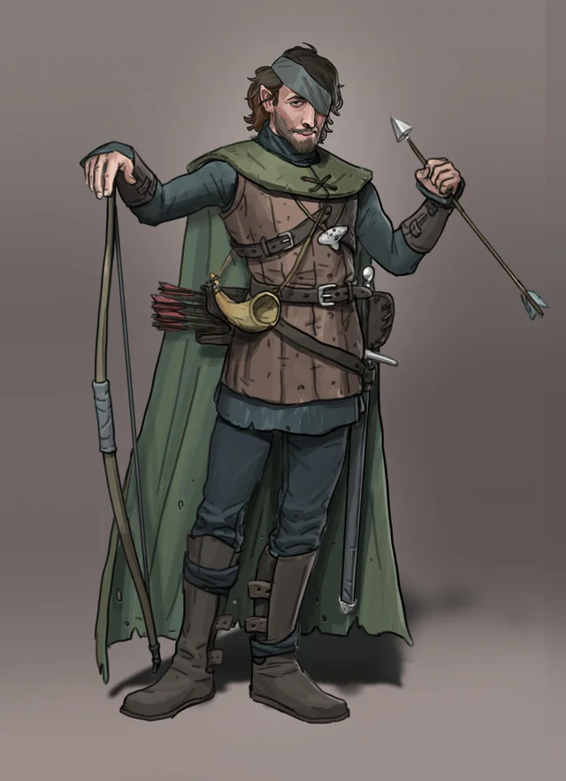

Our Heroes:
- Hector the Well Endowed 
- Thalemas the Forgotten

- Tiny Nuggins

- Nightman

- Billy Stubhorn

Campaign 2: "The Sea Ghost"
Our Heroes:
Episode 4 (continued)
A few nights later, the party is summoned by the town watch. As they sail out towards the ship one guard, Lt. Dan, informs the party he will be going with them aboard the ship, against the wishes of the City Council. Soon after their conversation, our heroes are dismayed upon noticing another row boat heading their way. On it the group sees 3 bandits and they commence arguing about whether to kill them, deceive them, or something else. As they get nearer the boat the party is still arguing until Hector looses an arrow into the chest of one bandit, quickly followed by Nightman’s newly learned Eldritch Blast which quickly ends the life of the bandit and helps the party decide which route they are taking in terms of how to deal with their recent problem. The boats crash into each other, giving Lt. Dan an opportunity to cleave open the skull of a second bandit. The third bandit attempts to draw his sword only to be disemboweled by Tiny, the farter.
The heroes continue their approach to the ship after their encounter. As they approach they ship, now clearly seen as named “The Sea Ghost”, they determine that Nightman, Lt. Dan, and Tiny will board first, hopefully in deception, but in force if necessary. Upon boarding, Nightman quietly dispatches one bandit by pulling him into the dark and slitting his throat. Tiny hacks at the second bandit in view, but only is able to leaving a gaping wound. However, before the bandit could cry out – as feared – Lt. Dan, sulking with anger from his last failed kill, splits him in half vertically with an upward slash of his sword.
Episode 5
While pulling the remaining 3 members aboard – Hector, Thalemas, and Billy, Lt. Dan experiences an intense sense of guilt, having temporarily abandoned his duty, and plunges back into the sea to return to the row boat. Unknown to our heroes, the noises of hoisting up their fellows and Lt. Dan’s splash, alerted more members of The Sea Ghost. Thus, right after the final member, Billy is being pulled up, Tiny is stabbed in the back by the Pirate Captain, Thalemas is slashed by a bandit, and Nightman is hit by a ray of frost, and Hector, realizing the dilemma due to his keen perception, nearly dodges a thrust of a second bandit’s sword. Upon boarding, Billy tosses a healing bean to Tiny, the most grievously wounded. While chewing to health, Tiny thrusts one of his javelins throw the thigh of his assailant – the Captain. Thalemas turns and lightly slashes the chest of his attacker, Nightman sends an Eldritch Blast towards the Pirate Wizard, however he misses due to his lack of clarity caused by the wizard’s use of fog cloud. Billy rushes the second bandit with his head lowered, horns in front. He hits the bandit, knocking him down. With quick thinking, Tiny launches his second javelin into the chest of the bandit recently downed, killing him. The first bandit then stabs at Tiny, only to bend his blade upon Tiny’s armor. The Captain then slashes at Tiny and pierces a soft spot in his mail. Meanwhile, the Wizard returns a blast at Nightman, this time witch bolt. However, Nightman moves quickly enough to only take residual damage. As Nightman regains his footing, Thalemas fires a flaming bolt towards the fog cloaked wizard. Although he misses, he clears the fog and the wizard is clearly seen. Taking advantage of the situation, Hector sends and arrow into the heart of the Wizard. Billy then wraps the Pirate Captain in vines. Seeing his inevitable death, the final bandit dives off board only to be devoured by sharks feasting on the guts that have spilled off the decks of The Sea Ghost.
Before Nigthman can slit the throat of the Captain, Tiny complains that killing a captive is inhumane. Before the party can dispute his claim, Billy advises that they should interrogate said captive. The Captain claims he knows very little about his customers and that he is just a middle man. However, he does tell the party that his part includes both Sanbalet and “some weird Alligator people”. The Captain begs for his life, claiming to want to see his family. Nonetheless, the party decides to let Nightman slit his throat, to the absolute disgust of Tiny.
After clearing the deck, the party moves through many rooms with little to find, until they move into a dimly lit room. In it the encounter a faint smell of swamp and see 3 scaly figures sleeping. Thalemas stabs the first in its sleep. The other 2 spring up with reptilian reflexes and stab at Nightman, who reciprocates with a dual dagger cross slash to its throat. The 3rd reptile is dispatched by Tiny’s longsword by being sliced in half horizontally. After killing what the group now realizes are some type of lizard humanoids, Billy discovers a psudodragon named Bimz. Bimz immediately connects with Hector due to Hector’s lack of involvement in the murder of its master and his exuding of goodness, similar to that of Bimz’s previous master.
The party continues their search of the ship, now entirely confused by the lizard-folk they recently fought. They clear a few more room until they hear a faint cry for help from one room. Upon entering the room they find a naked sea-elf named Oceanus. Using his knowledge of elven, Hector discerns that Oceanus was a prisoner of the pirates/smugglers and is likely to be an ally. Leary from their last betrayal, they decide not to arm Oceanus, but still let them join him.
The party then descends into the 3rd level of the ship. Here they encounter a Bosun and 2 bandits. The 2 bandits charge, but the first is met with Nightman’s Eldritch blast while the second is skewered by one of Hector’s arrows. The Bosun, stronger than the bandits, absorbs a fury of bite from Bimz, but is ultimately cut down by Tiny and Thalemas. After killing the remaining enemies, the party discovers they are at the end of the ship with only the bilge left search. Here Thelamas, in an act of exhaustion, claims that Hector should check out the area alone. Oceanus objects and climbs down the ladder with Hector, upset with the party, but impressed by Hector’s bravery and compliance. With Bimz flying close by the 2 descend into bilge where they encounter 2 rot grubs. Hector, Bmiz, and Oceanus quickly hack the abominations to pieces. After killing the grubs, the group sifts through the garbage and find a letter. The letter indicates the location of Lizard Lair at the mouth of the Dunwater River, within the Hool Marshes (???maybe there is a map to here???).
Episode 6
Upon clearing the ship, our heroes move up deck and decide to give steering the massive brigantine a shot. Thalemas claims he is best suited due to his previous experience as a pirate, but when trying to steer, he realizes he has forgotten quite a bit. Instead, using his intuition, Hector proves best at manning the helm. Like Thalemas, Tiny claims he is best suited for rigging due to his strength, but the party finds out it is Nightman’s dexterity that is more apt for the task. Once positions are settled, the crew successfully sails the ship into Saltmarsh’s port where they disembark to meet with the council.